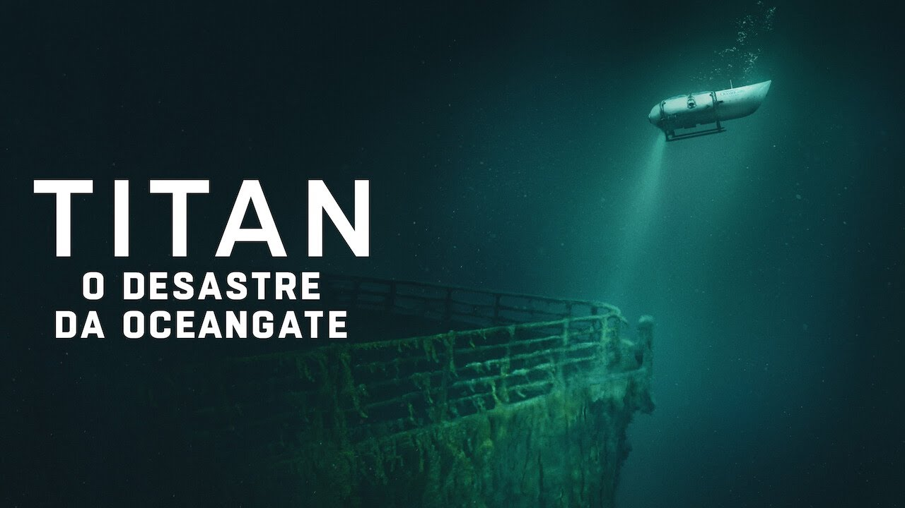

Este documentário investiga o trágico acidente envolvendo o submarino Titan, da empresa OceanGate, durante uma expedição ao Titanic. Com depoimentos exclusivos, imagens de arquivo e análises detalhadas, a produção revela os desafios técnicos, os riscos da exploração profunda e as consequências desse desastre que chocou o mundo. Um relato emocionante sobre coragem, inovação e os perigos dos limites do oceano.